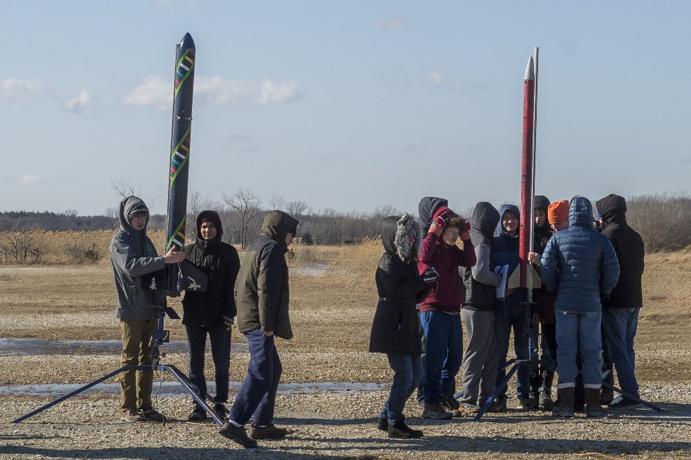
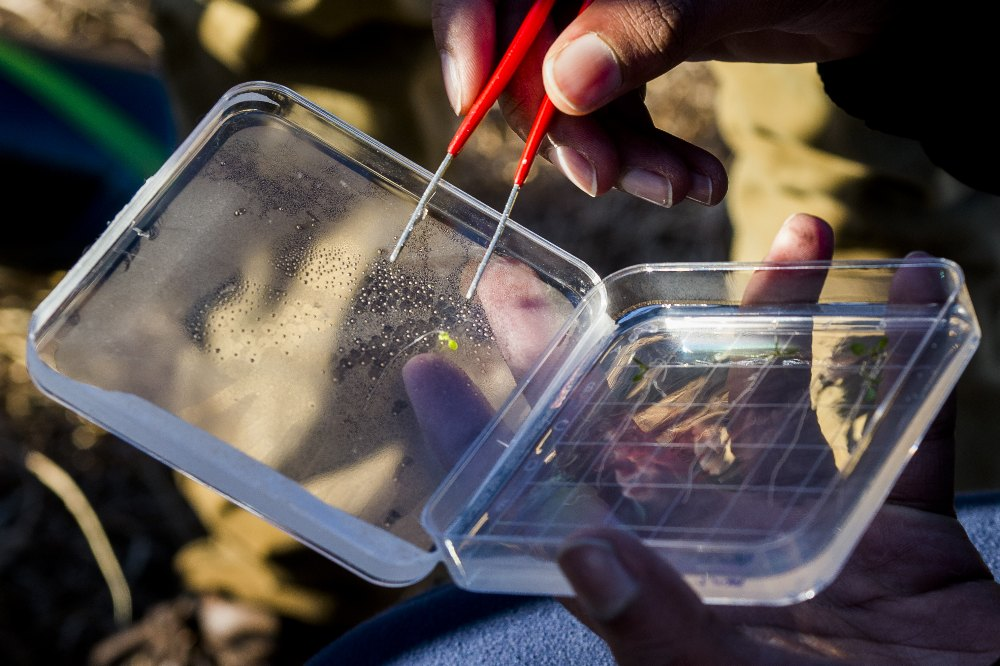
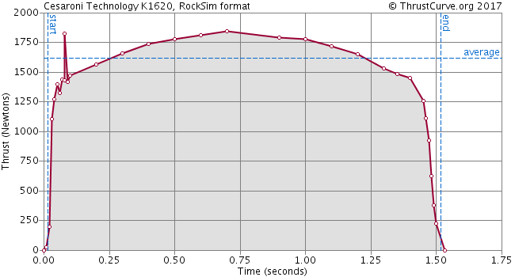
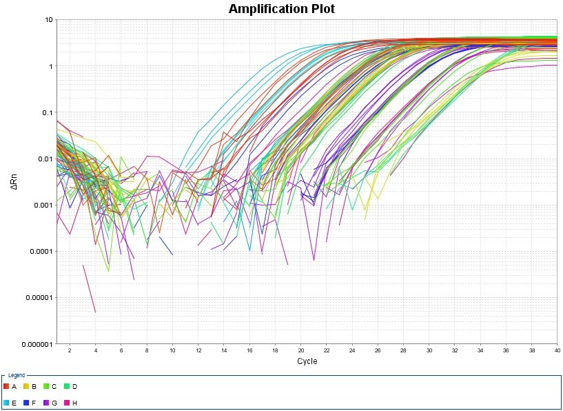
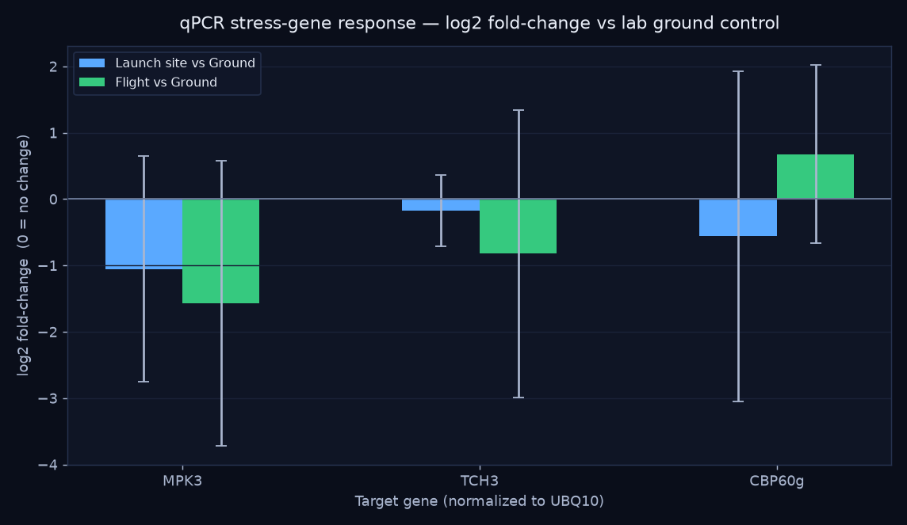
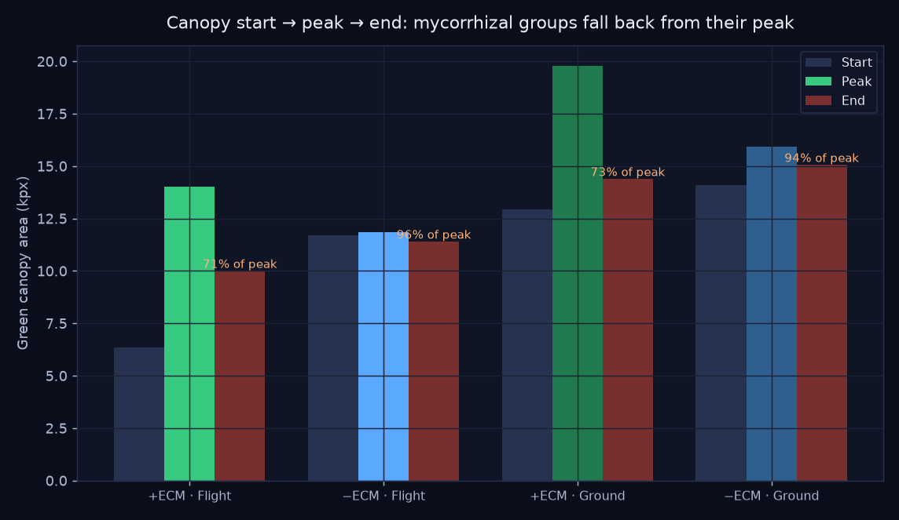
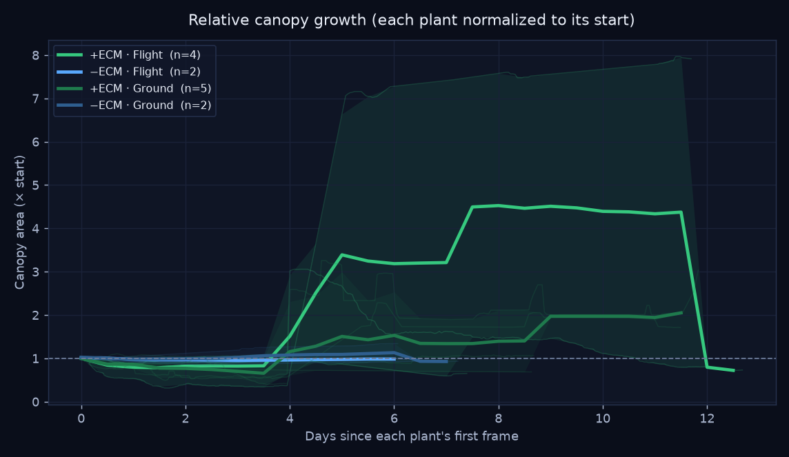
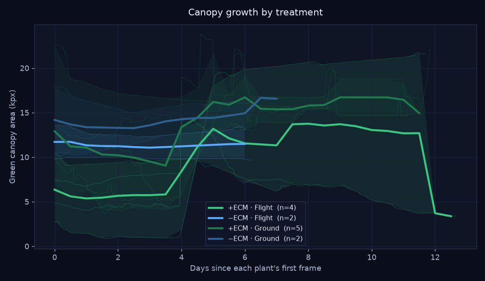
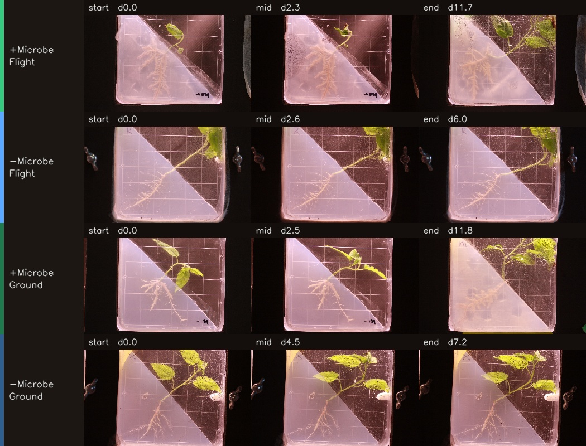

A real MadWest dataset. It starts with the stimulus — a payload carried aloft on a sounding rocket — and follows it into two readouts of what the flight did: gene expression (the Reggies' Veggies qPCR arm, below) and seedling growth (the TREES timelapse, by image analysis). Everything is packaged for NASA OSDR.
The results below come from a program of three sounding-rocket launches (2018, Cesaroni K1620 motor). "Reggies' Veggies" and "TREES" are two of them — TREES is a launch codename, not a species.
Flown seedlings showed earlier flowering, and co-flown ectomycorrhizal spores stayed viable after the flight.
The repeat that produced the Reggies' Veggies gene-expression samples analysed just below.
Populus tremula (aspen) × ectomycorrhiza — the survival timelapse further down.
It begins with a flight. In the Reggies' Veggies experiment (launch 2), Arabidopsis was flown on a sounding rocket alongside launch-site and lab controls, then assayed by qPCR for stress-response genes — asking what the flight changed inside the plants. Its companion, the TREES survival timelapse further down (launch 3), asks whether a fungal partner could help a tree survive the flight. Together they pair a gene-expression readout with a growth phenotype — exactly the kind of multi-measurement story OSDR is built to hold.

Launch day — the payload heads up on a K1620 motor.

Back in the lab — preparing samples for RNA extraction.
The payload flew on a K1620 motor, with onboard altimeters logging the flight. The motor's thrust curve and the raw altimeter exports are included in the data deposit as the environmental context for the biology.

Expression of plant stress-response genes was measured by qPCR, normalized to a housekeeping reference. Amplification plots and raw runs are in the deposit.
| Gene | Role in the plant |
|---|---|
| UBQ10 | Reference / housekeeping (normalizer) |
| MPK3 | Stress-signaling MAP kinase |
| TCH3 | Touch / mechanostimulus-induced |
| CBP / CBP60g | Calmodulin-binding; defense signaling |

Per-well Ct values from the qPCR exports were normalized to the UBQ10 reference gene and expressed as fold-change relative to the lab ground control (the standard ΔΔCt method). Four biological replicates per group.

| Gene | Launch site | Flight |
|---|---|---|
| MPK3 | 0.48× | 0.34× ↓ |
| TCH3 | 0.89× | 0.56× ↓ |
| CBP60g | 0.68× | 1.60× ↑ |
Flown plants trended toward lower MPK3 and TCH3 (stress- and touch-signaling) but higher CBP60g (defense signaling) versus the lab control — a hint that flight shifts which stress pathways are engaged rather than simply turning "stress" up or down.
DEVLOG.md.)TREES is the third launch's codename. Its host was the aspen Populus tremula, and the "microbe" was an ectomycorrhizal (ECM) fungus — a root symbiont. The hypothesis: the tree–fungus symbiosis would help the seedlings survive the rigors of flight. Seedlings grew on gridded agar plates and were imaged as a timelapse under a 2×2 design crossing ECM inoculation with rocket flight — 13 plants, ~2,600 frames, up to ~12 days.
| + ECM (mycorrhizal) | − ECM | |
|---|---|---|
| Flight (rocket) | MR · +ECM · Flight (4 plants) | R · −ECM · Flight (2 plants) |
| Ground control | M · +ECM · Ground (5 plants) | X · −ECM · Ground (2 plants) |
Each plant plays through its own timeline so you can compare how the groups developed. Watch the +ECM (mycorrhizal) plates especially — several green up, then brown and collapse. The day counter in each tile is elapsed time for that plant.
Tracking green-canopy area frame by frame tells a story a single snapshot misses: the mycorrhizal (+ECM) seedlings peaked, then declined — ending at only ~71–73% of their peak canopy, with several collapsing far further (one flown +ECM plant fell to 22% of its peak). The non-mycorrhizal plants held near their peak (94–96%). Contrary to the hypothesis, the fungal partner did not help the trees survive — the +ECM groups slowly died back across the timelapse.

Classroom-scale (2–5 plants per group). Crucially, the +ECM groups were imaged ~9 days but the −ECM groups only ~6 — so the −ECM plants may simply not have been watched long enough to meet the same fate. The mycorrhizal die-back is real and visible in the footage, but this is a strong trend, not a controlled proof. The other contribution is the method: turning plate photos into quantitative, OSDR-ready growth trajectories.

Each plant normalized to its own starting canopy. Thick line = treatment mean; faint lines = individual plants; band = min–max spread.

Absolute green-canopy area (kilo-pixels at a fixed analysis width). Same plotting convention as the relative chart.
Three frames pulled from each representative plant's timelapse.

One representative plant per treatment, full resolution.
+ECM · Flight — plant mr1-1
−ECM · Flight — plant R3-3
+ECM · Ground — plant m2-3
−ECM · Ground — plant X4-1
Each frame is reduced to its green canopy using the Excess-Green vegetation index, with near-white backlight glare removed. Roots and the frosted cover are excluded.
Canopy area (in pixels at a fixed width) is logged per frame with its timestamp, then smoothed and normalized per plant to control for plate-to-plate scale.
Plants are averaged within each treatment on a common time grid, producing the growth curves and the start → peak → end comparison that reveals the die-back.
analysis/
(segment_lib.py, analyze.py, make_timelapse.py) and writes a tidy
growth_data.csv — one row per frame, ready to reshape for an OSDR submission.A clean canopy-growth dataset like this — with methods and metadata — is exactly what the OSDR workflow is built to package and share.